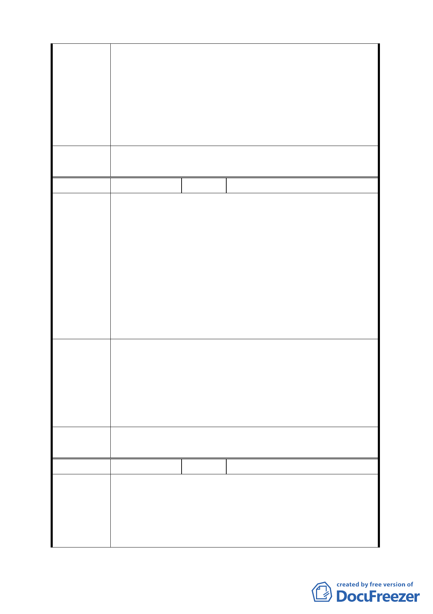

委員會議
決議
編號
陳情理由
建議辦法
委員會議
決議
編號
陳情理由
生爭議。
四、如陳情理由四。
五、應增述 2 年內完成申請之起算日應為都市計畫公告實施
後，合法水權開放申請日起算較宜。
六、本都市計畫書中都市設計準則之規定若與溫泉區之現有
建築相衝突者，應允許現有經營業者以替代方案彈性處
理。
同編號 1。
１５
陳情人 大老溫泉餐館
一、關於計畫書中第 17 頁（二）規定專用區範圍內之建蔽
率與容積率各不可超過 40％及 80％。
二、關於計畫書中第 16 頁第 7 項 22 組載明，溫泉產業特定
專用區內土地及建築物得為餐飲業，但規定餐飲用途營
業面積需小於溫泉相關項目，此規定若依現況，實難達
成，建議以現況之用餐與使用溫泉浴室之遊客比例調
整，就目前作為餐飲用途面積約為溫泉浴室之 1.5 倍。
三、就計畫書內容來看，對政府或相關主管機關，其權利義
務及應辦事宜……等皆未見，使民眾無所適從，且對於
此計畫案之可行性及北投溫泉區未來發展有所質疑。
一、建築容積建議依溫泉法原意––於條文中增加敘明，原有
在地的溫泉經營業者，應可不受本文限制，可以目前既
成的建蔽率和容積率提出申請許可。
二、餐飲用途面積建議應以前之實際使用比例作為參考。
三、計畫書中對於政府或相關機關應辦理事宜應清楚交代於
都市計畫書中，使民眾及業者有規則可循。
同編號 1。
１６
陳情人 磺溪號何洲 櫻城溫泉餐廳
一、依公開閱覽之都市計畫書陸、變更計畫內容都市設計準
則的（三）水岸空間第一條「為維持磺溪溪濱步道串聯
之順暢性，臨磺溪水岸之建築物須與水岸保持距離 5
公尺以上之退縮，其中……原有地貌保留帶」。
二、依都市計畫書陸、變更計畫內容土地使用分區管制（二）
13